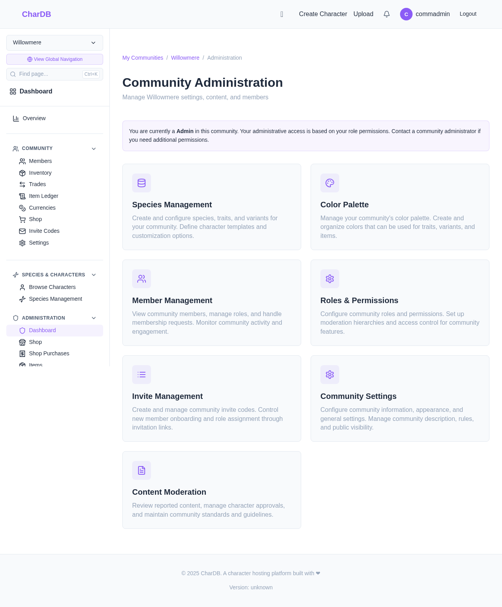
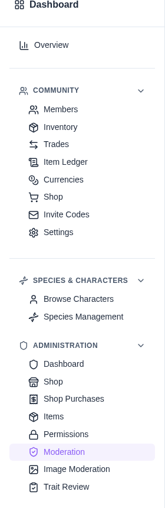
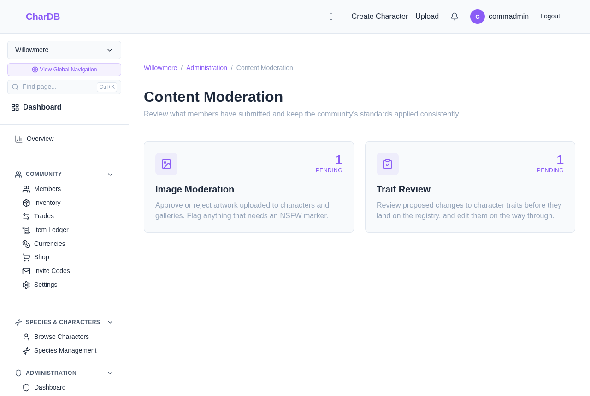
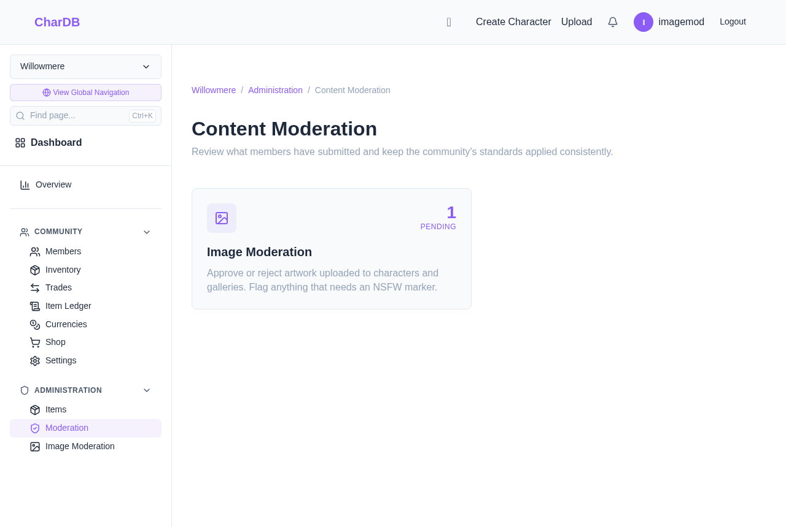

One home for a community's review queues
A community has two review queues: Image Moderation, where uploaded artwork waits for approval, and Trait Review, where proposed changes to a character's traits wait before they land on the registry. The Content Moderation page is the shared home for both. It tells you at a glance how much is waiting in each, and takes one click to get into either.
Images and traits in one place
How much is waiting, before you open anything
You only see the queues you can work
Admin dashboard, sidebar, or Ctrl+K
From the Community Administration dashboard, the Content Moderation card opens the page. The card appears only if you can work at least one of the two queues.

The community sidebar has a Moderation entry under Administration, with the two queues listed beneath it. Those direct links have not gone anywhere: use Moderation when you want the overview, and the queue links when you already know which one you are going to.

pending, queue,
approve or moderation. All three
moderation pages answer to those words even though none of them says
"pending" in its name — see
Fuzzy Page Navigation.
Each queue is one card, and the large number on it is how many items are pending in that queue right now. Deferring something does not decide it, so a card sent to the back of a queue still counts here. Click a card to open that queue.

Moderating images and reviewing traits are separate permissions, and most staff hold only one of them. The page shows a queue only to somebody who can actually work it:
| Permission | Queue shown |
|---|---|
| Moderate Images | Image Moderation |
| Edit Character Registry | Trait Review |
| Neither | None — the page, the dashboard card and the sidebar entry are all withheld |
An image moderator who cannot edit the registry sees one card, not two, and no empty second card hinting at something they cannot open:

The cards are a way in, not a place to decide anything. Each queue has its own walkthrough: